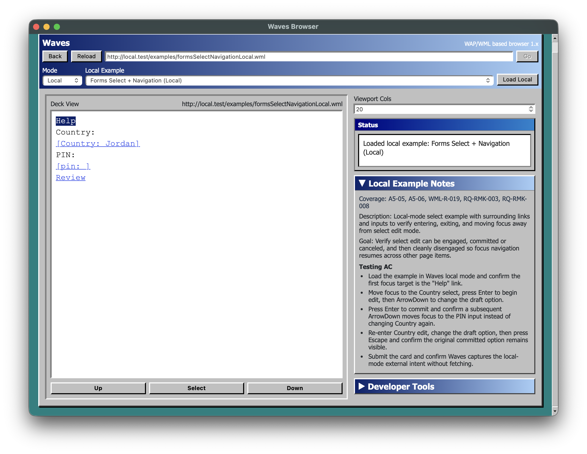
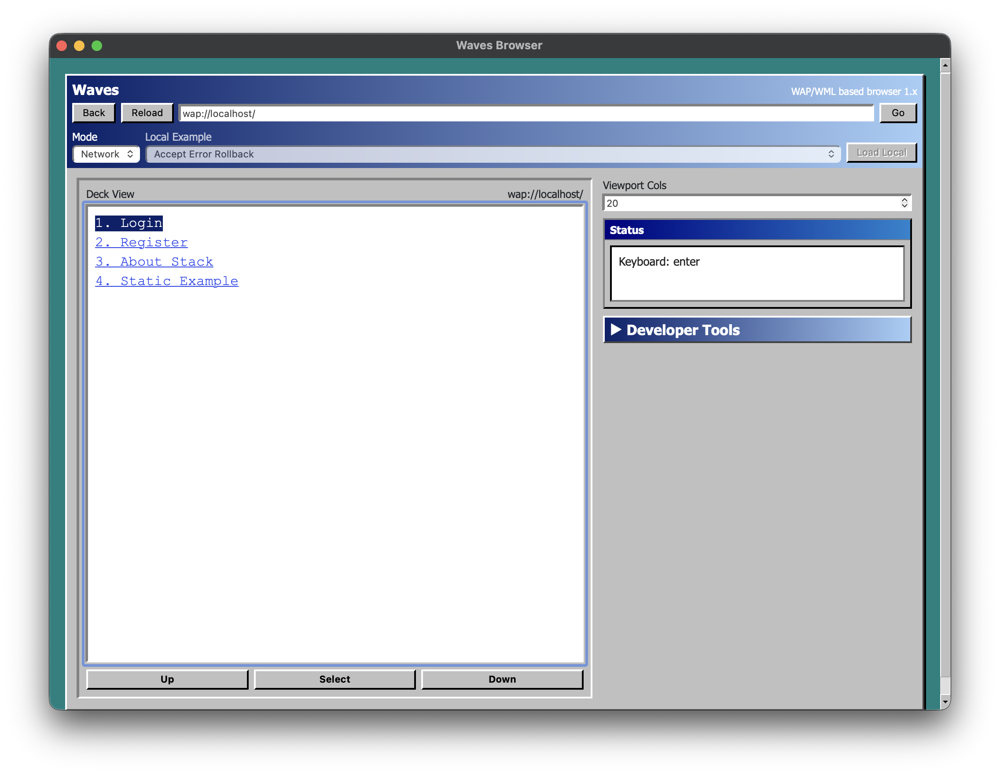
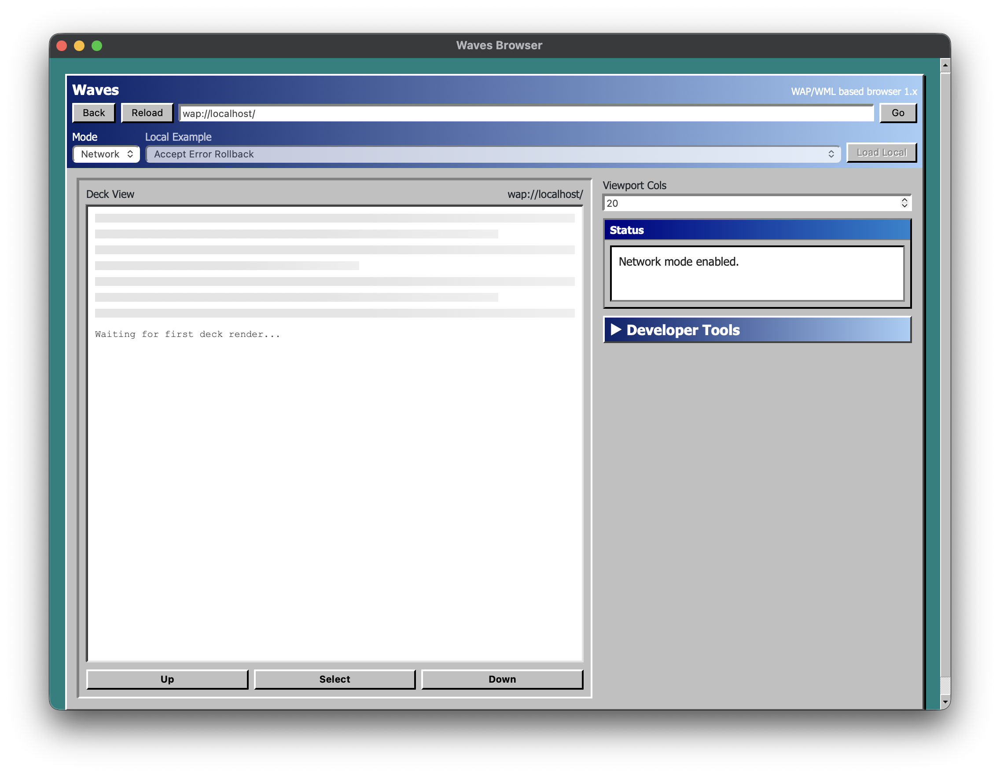
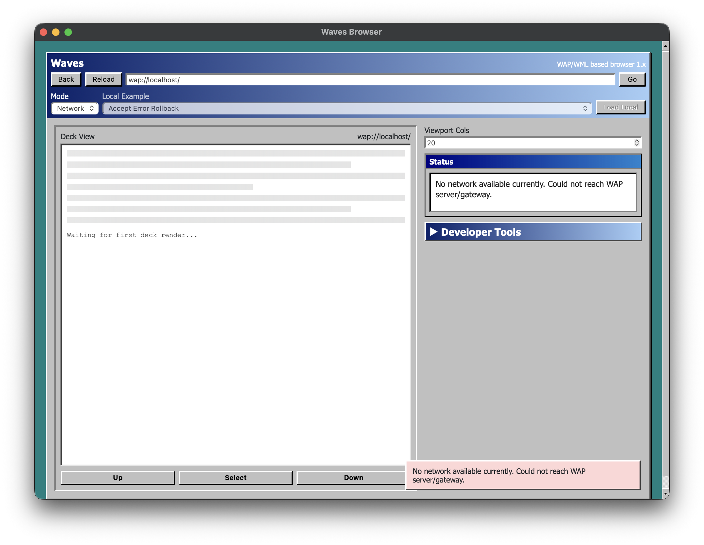

Local examples, forms, and select controls now work directly in Waves.
WaveNav Labs
Build and test the mobile web that existed before modern browsers.
Waves is the desktop face of a layered WAP/WML emulator stack focused on deterministic runtime behavior, protocol realism, and tooling that makes this niche platform usable again.
- Engine fidelity Deck and card navigation, forms, timers, and script/runtime semantics are driven by an engine-first contract.
- Desktop host Waves gives the stack a fast desktop shell for fixtures, local examples, debug views, and real network sessions.
- Protocol realism Transport and gateway layers stay separate so constrained-network behavior does not leak into the runtime.


Network mode handles offline and slow-server cases with less UI blocking.
Payload guardrails and deterministic history behavior are covered end to end.
Why it exists
WAP stacks are usually either historically vague or hard to work on.
This project is aimed at a stricter middle ground: preserve authentic behavior where it matters, but make the engine, host, and transport layers testable enough for modern iteration.
Stack
Layered by design
- GatewayKannel environment and gateway wiring.
- TransportWBXML, WSP/WTP behavior, and constrained fetch rules.
- EngineRust/WASM WML parser, runtime, layout, navigation, and script execution.
- WavesTauri desktop host with examples, debug affordances, and integration coverage.
Inside Waves
The product shell is now useful, not just a harness.
Use local examples to learn the runtime, flip to network mode for live fetches, and inspect session state, snapshots, timelines, and transport responses while you work.
What is shipping now
Recent work moved Waves from fragile prototype toward usable emulator shell.
Interaction
Text inputs, select controls, and form-submit handling are wired through the engine and desktop host.
Responsiveness
Network mode startup and failed fetches no longer monopolize the entire interface the way they did before.
Determinism
History replay, payload limits, and frame-oriented engine updates now have better behavioral coverage.
Real states
Waves is now credible across happy-path and failure-path browsing.
The shell can load local examples, render live linked decks, and stay communicative when network startup or fetches go sideways.


Next step